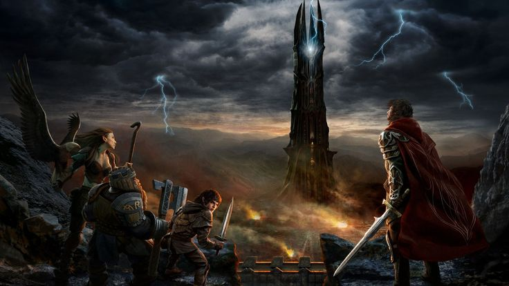
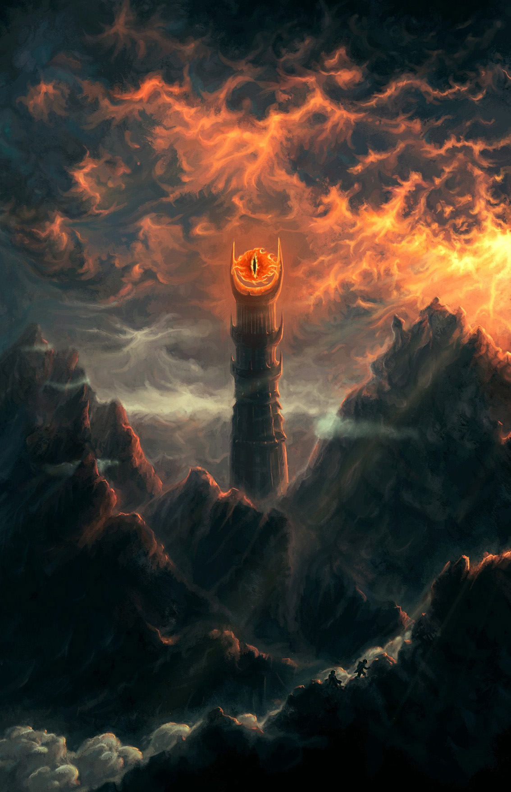
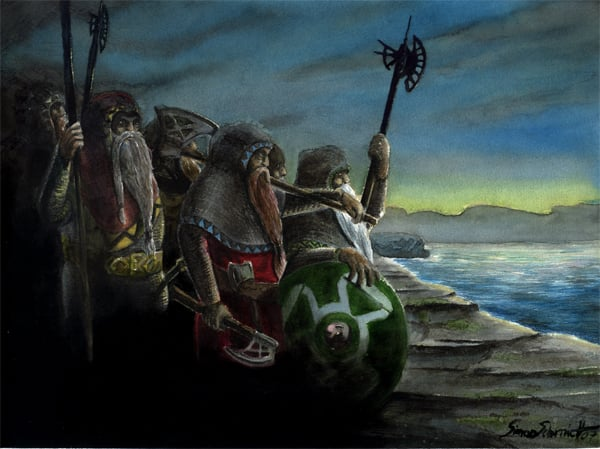
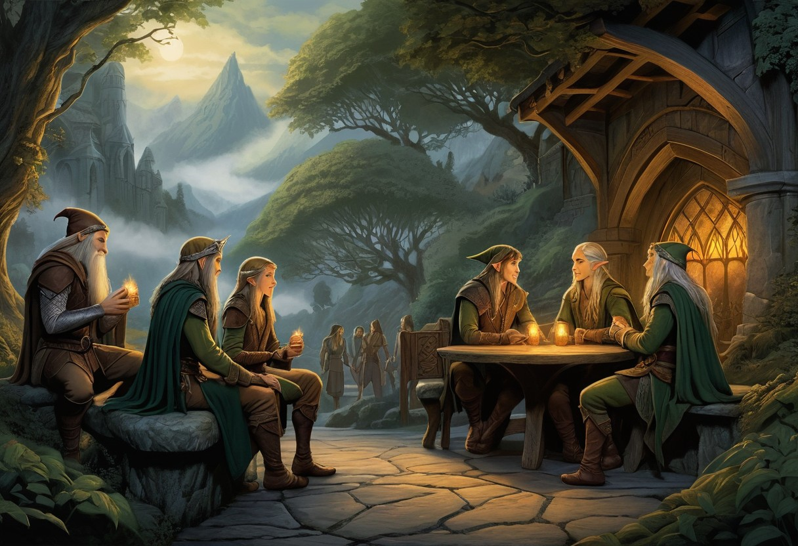

Attributes
Agility
Agility is a physical attribute that represents flexibility and speed. From a roleplay perspective, someone who has high agility will be graceful and lithe or flexible and quick to react. A person with low agility is likely to have the opposite traits described.
In game mechanics terms, agility determines how fast a character moves and is one of the most common skill caps that combat skills depend on.
Aura
Aura is a spiritual attribute and can be perceived in many ways. From a roleplay perspective, someone with high aura will be strong, influential, and have a clear sense of their goals and aspirations. This clarity is often infectious and people are naturally drawn to those who have a high aura. Someone with high aura might be compassionate, empathetic, and a good listener. They might have the opposite of these traits but are able to convince others that they are all of those things. Often, someone with high aura will attract those who are in need of whatever is missing.
In terms of game mechanics, aura is calculated in a few different skills often involving watching, listening, and perceiving. Other benefits to having a high aura will need to be discovered by playing through playing and exploring Arda Marred.
Constitution
Constitution is a physical attribute that represents the endurance, resilience, hardiness and health of an individual. From a roleplay perspective, it is a combination of physical fitness, good genetics, and sheer will to live. An individual with a higher constitution might be hale and healthy, whereas an individual with a lower constitution might be sickly and prone to injury.
From a game mechanics perspective, constitution is substantially involved in the determination of maximum stamina and health, as well as the recovery rates for the same. It is also involved in determining maximum and recovery levels for stun. A few skills of a physical nature that have a substantial component of endurance (climbing or swimming for example) also use constitution to determine their caps.
Dexterity
Dexterity is a physical attribute that represents hand-eye coordination of motor movements. From a roleplay perspective, someone who has high dexterity has a high degree of control over their own body. A person who is very dexterous might be precise and steady or graceful and lithe. A person with low dexterity is likely to have the opposite of the traits above.
In game mechanics terms, dexterity determines how steady and precise a character is. It is one of the most important physical traits to take into consideration for certain craft skills.
Intelligence

Intelligence is a mental attribute that represents a combination of learning ability, memory, problem solving ability and mental aptitude. Intelligence is not representative of education, although intelligent individuals may have an easier time being educated, and there can be both very unintelligent but highly educated individuals as well as very intelligence individuals with no education. From a roleplaying perspective, intelligence characters are good learners and problem solvers, and will tend to be better at identifying connections others might miss.
From a game mechanics perspective, intelligence is used extensively in many mentally demanding crafts and skills, or skills where memory and/or problem solving plays an important part: science, hi-tech crafting, medical and also larceny skills all fall under this definition. Additionally, intelligence influences how fast new skills are acquired and how fast existing skills improve, as well as language and accent acquisition.
Strength

Strength is a physical attribute that represents the muscle and power of the individual. From a roleplay perspective, strength is most simply correlated with muscle density; someone with high strength should have bulky muscle. However, muscle size is not the only story and strength also represents to some extent both inherent ability to apply that muscle as well as a slight reflection of the force of will behind applications of strength.
In game mechanics terms, strength determines how much weight a character can carry, how hard they hit with melee weapons, how likely they are to succeed at feats of strength (like breaking through a door), as well as having a slight effect on hunger and thirst (people with lots of muscle mass have a higher metabolism and require more calories and hydration).
Willpower

Willpower is a mental attribute that represents tenacity, determination, courage and self-control. From a roleplay perspective, a high-willpower individual has a great degree of control over their own mind. A high willpower individual may exercise agency and control in situations in which others may be forced into disadvantageous actions by their primal instincts.
High willpower is not necessarily related to stubbornness as some people's stubbornness may be driven by a lack of ability to overcome their instinctual position on a matter, which is characteristic of low willpower individuals. That being said, high willpower individuals can still be stubborn but theirs is motivated by the conscious choice to stick with a position.
From a game mechanics perspective, willpower is a substantial component of an individual's ability to resist pain, stun and even to a small extent physical damage. It is also used to resist becoming pinned by covering fire, as well as to ignore warding defenses when fighting aggressively. Some skills for which concentration is a component have their caps governed partially by willpower. Notably, the Combat Instinct skill (used in a great deal of combat situations) has its cap governed mostly by willpower, as fight-or-flight instincts are the most difficult to overwrite with good combat responses.